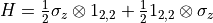
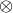
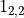
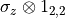
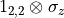
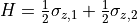
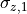
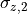
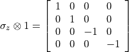
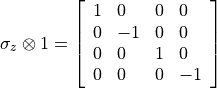

[1]:
import quanguru as qg
2 - How to create composite quantum systems¶
In this tutorial, we show various different ways you can create/define composite quantum systems in QuanGuru.
Create each system then compose¶
This approach is probably the most natural and easy way. We discuss the alternatives below, and they are all just compact forms of this.
Let’s start by creating a composite system with two qubits. We first create two Qubit instances and a QuantumSystem (for composite quantum system). Without any sub-systems (stored in the .subSys) or operators assigned to it, the QuantumSystem instance is just an empty container. Therefore, we next add the sub-systems by calling addSubSys with a list containing the sub-systems we want to add. The order of sub-systems in the given list will determine the structure of
Hilbert space as further explained below.
[2]:
# create four qubits
qub1 = qg.Qubit()
qub2 = qg.Qubit()
# create a composite quantum systems
twoQub1 = qg.QuantumSystem()
# call the addSubSys with the list of qubits
twoQub1.addSubSys([qub2, qub1])
[2]:
<quanguru.classes.QSystem.Qubit at 0x7fa70450a4f0>
In above cell, we first created qub1 then qub2. The order of creation as above does not have any special meaning other than the names of the Qubit objects, which will be named Qubit1 and Qubit2, respectively. When we add them as sub-systems to the composite quantum system twoQub1, we passed them in a list. Their order in this list, however, determines the structures of the Hilbert space. Below, we examine the structure of the Hilbert space from the composite operators
(discussed below), but we can also examine it by using different information stored and used internally by QuanGuru.
Firstly, the sub-systems are stored in a dictionary, where the key is the sub-systems name and the value is just a reference to the subsystem object. This dictionary can be reached using the subSys attribute as below, and the order of the qubits should be consistent with the given list.
[3]:
print(twoQub1.subSys)
{'Qubit2': <quanguru.classes.QSystem.Qubit object at 0x7fa70450a5e0>, 'Qubit1': <quanguru.classes.QSystem.Qubit object at 0x7fa70450a4f0>}
As expected, Qubit2 is the first item of the dictionary.
When a quantum system is added as a sub-system to a composite system. The library stores/updates certain additional information relevant to the structure of the Hilbert space. Before moving on with the examples, let’s explain what does structure of the Hilbert space mean?
Consider the following composite system Hamiltonian for two non-interacting qubits

where  is the tensor product and  is the 2-dimension identity operator. Here,  and  effect different portions of the Hilbert space corresponding to each qubit, and this what we mean by the structure of the Hilbert space. The operators and are referred as composite operators, and we generally write such operators with a cleaner implicit notation as

and say that  () operates on the first (second) qubit. Also in QuanGuru, we want such information to be implicit to have cleaner code, and the library manages the details internally. The first (second) qubit of our composite system are, therefore, (from left-to-right) first and second items of the list, qub2 and qub1. In this case, this order is our choice and is independent of the order in which the Qubit objects are created.
In the above Hamiltonian, the total dimension after the first qubit is 2 (the dimension of the second qubit), and the total dimension before the second qubit is 2 (the dimension of the first qubit). In order to be able to create composite operators, our Qubit objects need these information, and it is stored in _dimsAfter and _dimsBefore attributes. QuanGuru manages these values, therefore _dimsAfter and _dimsBefore attributes should not be modified by the user. The
default values (i.e. when the system is not in composite or no system before/after) for these attributes is 1, which is interpreted as a 1-dimensional identity, i.e. scaler 1 that does not change anything for the operator.
Now, let’s print _dimsAfter and _dimsBefore for both of the qubits and verify.
[4]:
print(qub1._dimsBefore, qub1._dimsAfter)
print(qub2._dimsBefore, qub2._dimsAfter)
2 1
1 2
These _dimsAfter and _dimsBefore values are used internally to create composite operators. Since, according to our convention, the qub2 is the first sub-system of the composite system, its composite operator should be

and the composite operator of the qub1 should be

Let’s print and verify. But, recall from the previous tutorials that Qubit objects use the two dimensional  to incorporate the
to incorporate the  factor of the Hamiltonian, so the values will be half.
factor of the Hamiltonian, so the values will be half.
[5]:
# freeMat is just the (composite) operator of the system
print(qub2._freeMatrix.A)
print(qub1._freeMatrix.A)
[[ 0.5 0. 0. 0. ]
[ 0. 0.5 0. 0. ]
[ 0. 0. -0.5 0. ]
[ 0. 0. 0. -0.5]]
[[ 0.5 0. 0. 0. ]
[ 0. -0.5 0. 0. ]
[ 0. 0. 0.5 0. ]
[ 0. 0. 0. -0.5]]
Create a composite quantum system using the operator¶
Above examples highlight the basics of composite quantum systems, and we now focus on alternative ways for composite system creation. We will take an incremental approach and simplify the above composite system creation step-by-step. First step is that we actually don’t have to create a composite system first then add the sub-systems, we can do them in a single line as below.
[6]:
qub3 = qg.Qubit()
qub4 = qg.Qubit()
twoQub2 = qg.QuantumSystem(subSys=[qub3, qub4])
print(twoQub2.subSys)
print(qub3._dimsBefore, qub3._dimsAfter)
print(qub4._dimsBefore, qub4._dimsAfter)
print(qub3._freeMatrix.A)
print(qub4._freeMatrix.A)
{'Qubit3': <quanguru.classes.QSystem.Qubit object at 0x7fa70450a400>, 'Qubit4': <quanguru.classes.QSystem.Qubit object at 0x7fa70450a7c0>}
1 2
2 1
[[ 0.5 0. 0. 0. ]
[ 0. 0.5 0. 0. ]
[ 0. 0. -0.5 0. ]
[ 0. 0. 0. -0.5]]
[[ 0.5 0. 0. 0. ]
[ 0. -0.5 0. 0. ]
[ 0. 0. 0.5 0. ]
[ 0. 0. 0. -0.5]]
It is shorter than the previous code but not much cleaner, and we can do better. We can use the operator as below
[7]:
qub5 = qg.Qubit()
qub6 = qg.Qubit()
twoQub3 = qub6 + qub5
print(twoQub3.subSys)
print(qub6._dimsBefore, qub6._dimsAfter)
print(qub5._dimsBefore, qub5._dimsAfter)
print(qub6._freeMatrix.A)
print(qub5._freeMatrix.A)
{'Qubit6': <quanguru.classes.QSystem.Qubit object at 0x7fa70450a9a0>, 'Qubit5': <quanguru.classes.QSystem.Qubit object at 0x7fa70450a8b0>}
1 2
2 1
[[ 0.5 0. 0. 0. ]
[ 0. 0.5 0. 0. ]
[ 0. 0. -0.5 0. ]
[ 0. 0. 0. -0.5]]
[[ 0.5 0. 0. 0. ]
[ 0. -0.5 0. 0. ]
[ 0. 0. 0.5 0. ]
[ 0. 0. 0. -0.5]]
In this notation, the order of the sub-system is again from left-to-right as in the list provided to addSubSys.
Now, it might be obvious that we can reduce all of this into a single line as follows
[8]:
twoQub4 = qg.Qubit() + qg.Qubit()
print(twoQub4.subSys)
{'Qubit7': <quanguru.classes.QSystem.Qubit object at 0x7fa70450a6d0>, 'Qubit8': <quanguru.classes.QSystem.Qubit object at 0x7fa70450aa90>}
This short-hand is quite useful and clean, and notice that, in this case, the order of the sub-systems will match their creation order. But, the problem is that we now don’t have any explicit references to our sub-systems, Qubit7 and Qubit8, if we need them. Here, we want to print the _dimsBefore and _dimsAfter and freeMat, and knowing the name of our quantum systems and the fact that they are stored in the subSys dictionary, we can achieve this as below
[9]:
qub7 = twoQub4.subSys['Qubit7']
qub8 = twoQub4.subSys['Qubit8']
print(qub7._dimsBefore, qub7._dimsAfter)
print(qub8._dimsBefore, qub8._dimsAfter)
print(qub7._freeMatrix.A)
print(qub8._freeMatrix.A)
1 2
2 1
[[ 0.5 0. 0. 0. ]
[ 0. 0.5 0. 0. ]
[ 0. 0. -0.5 0. ]
[ 0. 0. 0. -0.5]]
[[ 0.5 0. 0. 0. ]
[ 0. -0.5 0. 0. ]
[ 0. 0. 0.5 0. ]
[ 0. 0. 0. -0.5]]
This obviously is not a cleaner approach, if we need explicit references to our objects. But, we generally don’t need it, and all the functionalities of QuanGuru accepts the object name(or any of its alias) instead of a reference. We will cover such examples in future, but this basically means that we will need this explicit references in extreme cases.
Create a composite quantum system using the operator¶
If we want to create a quantum system with  identical copies of a sub-system, we don’t necessarily want to type all that times even if we are simply summing them. In such cases, we can use the operator as follows
identical copies of a sub-system, we don’t necessarily want to type all that times even if we are simply summing them. In such cases, we can use the operator as follows
[10]:
fourQubit = 4*qg.Qubit(frequency=0.2)
print(fourQubit.subSys)
{'Qubit9': <quanguru.classes.QSystem.Qubit object at 0x7fa70450ac70>, 'Qubit10': <quanguru.classes.QSystem.Qubit object at 0x7fa70450ad60>, 'Qubit11': <quanguru.classes.QSystem.Qubit object at 0x7fa70450ab80>, 'Qubit12': <quanguru.classes.QSystem.Qubit object at 0x7fa70450ae50>}
operator on composite system¶
We can use operators with composite quantum systems in two different ways.
Adding single system to an existing composite system with operator¶
When we use operator between a single system and a composite system, it adds the single system into the composite system. Let’s add more qubits to our fourQubit system.
[11]:
# this notation will be intuitive to most
# it is equivalent to fourQubit = fourQubit + qg.Qubit(frequency=1)
# and it justs add another qubits to our fourQubit system
fourQubit += qg.Qubit(frequency=1)
print(fourQubit.subSys)
{'Qubit9': <quanguru.classes.QSystem.Qubit object at 0x7fa70450ac70>, 'Qubit10': <quanguru.classes.QSystem.Qubit object at 0x7fa70450ad60>, 'Qubit11': <quanguru.classes.QSystem.Qubit object at 0x7fa70450ab80>, 'Qubit12': <quanguru.classes.QSystem.Qubit object at 0x7fa70450ae50>, 'Qubit13': <quanguru.classes.QSystem.Qubit object at 0x7fa70444f130>}
[12]:
# add another to demonstrate alternative form of above
fourQubit = fourQubit + qg.Qubit(frequency=2)
print(fourQubit.subSys)
for s in fourQubit.subSys.values():
print(s.frequency)
{'Qubit9': <quanguru.classes.QSystem.Qubit object at 0x7fa70450ac70>, 'Qubit10': <quanguru.classes.QSystem.Qubit object at 0x7fa70450ad60>, 'Qubit11': <quanguru.classes.QSystem.Qubit object at 0x7fa70450ab80>, 'Qubit12': <quanguru.classes.QSystem.Qubit object at 0x7fa70450ae50>, 'Qubit13': <quanguru.classes.QSystem.Qubit object at 0x7fa70444f130>, 'Qubit14': <quanguru.classes.QSystem.Qubit object at 0x7fa70444f5e0>}
0.2
0.2
0.2
0.2
1
2
Combining composite system with operator¶
We can use operator to combine two composite systems. This means that it creates a third composite system, whose sub-systems are the composite quantum systems which have their own sub-systems that can be single or composite systems, i.e. nested-composite-systems.
[13]:
# create a composite system of 4 qubits
# first two of these are identical and have frequency=0.1
# next two of these are identical and have frequency=0.2
# we can achieve this simply by
fourQubit2 = 2*qg.Qubit(frequency=0.1) + 2*qg.Qubit(frequency=0.2)
print(fourQubit2.subSys)
{'QuantumSystem6': <quanguru.classes.QSystem.QuantumSystem object at 0x7fa70443e2e0>, 'QuantumSystem7': <quanguru.classes.QSystem.QuantumSystem object at 0x7fa70443e200>}
[14]:
print(fourQubit2.subSys['QuantumSystem6'].subSys)
print(fourQubit2.subSys['QuantumSystem7'].subSys)
{'Qubit15': <quanguru.classes.QSystem.Qubit object at 0x7fa70444f400>, 'Qubit16': <quanguru.classes.QSystem.Qubit object at 0x7fa70444f220>}
{'Qubit17': <quanguru.classes.QSystem.Qubit object at 0x7fa70444f6d0>, 'Qubit18': <quanguru.classes.QSystem.Qubit object at 0x7fa70444f7c0>}
Notice that, in this case, our composite quantum system fourQubit2 has two sub-systems that are themselves composite systems. This because 2*qg.Qubit() creates a composite system, meaning that we add two composite systems to create fourQubit2.
QuanGuru manages all the relevant information about the dimensions for us, and let’s verify these.
[15]:
print(fourQubit2.dimension)
for compSys in fourQubit2.subSys.values():
print('\t', compSys.dimension, compSys._dimsBefore, compSys._dimsAfter)
for subs in compSys.subSys.values():
print('\t\t', subs.dimension, subs._dimsBefore, subs._dimsAfter)
16
4 1 4
2 1 8
2 2 4
4 4 1
2 4 2
2 8 1
How to remove a sub-system ?¶
Now, what if we want to remove a sub-system ? This is where the name attribute comes extremely handy, because, in order to remove Qubit15 from fourQubit2, all we need to do is
[16]:
fourQubit2 - 'Qubit10'
# the Qubit17 will be removed
print(fourQubit2.subSys)
print(fourQubit2.subSys['QuantumSystem6'].subSys)
print(fourQubit2.subSys['QuantumSystem7'].subSys)
# and all the dimension information are updated accordingly
print(fourQubit2.dimension)
for compSys in fourQubit2.subSys.values():
print('\t', compSys.dimension, compSys._dimsBefore, compSys._dimsAfter)
for subs in compSys.subSys.values():
print('\t\t', subs.dimension, subs._dimsBefore, subs._dimsAfter)
{'QuantumSystem6': <quanguru.classes.QSystem.QuantumSystem object at 0x7fa70443e2e0>, 'QuantumSystem7': <quanguru.classes.QSystem.QuantumSystem object at 0x7fa70443e200>}
{'Qubit15': <quanguru.classes.QSystem.Qubit object at 0x7fa70444f400>, 'Qubit16': <quanguru.classes.QSystem.Qubit object at 0x7fa70444f220>}
{'Qubit17': <quanguru.classes.QSystem.Qubit object at 0x7fa70444f6d0>, 'Qubit18': <quanguru.classes.QSystem.Qubit object at 0x7fa70444f7c0>}
16
4 1 4
2 1 8
2 2 4
4 4 1
2 4 2
2 8 1
[17]:
fourQubit2 - 'QuantumSystem6'
# the QuantumSystem11 will be removed
print(fourQubit2.subSys)
#print(fourQubit2.subSys['QuantumSystem6'].subSys)
print(fourQubit2.subSys['QuantumSystem7'].subSys)
# and all the dimension information are updated accordingly
print(fourQubit2.dimension)
for compSys in fourQubit2.subSys.values():
print('\t', compSys.dimension, compSys._dimsBefore, compSys._dimsAfter)
for subs in compSys.subSys.values():
print('\t\t', subs.dimension, subs._dimsBefore, subs._dimsAfter)
{'QuantumSystem7': <quanguru.classes.QSystem.QuantumSystem object at 0x7fa70443e200>}
{'Qubit17': <quanguru.classes.QSystem.Qubit object at 0x7fa70444f6d0>, 'Qubit18': <quanguru.classes.QSystem.Qubit object at 0x7fa70444f7c0>}
4
4 1 1
2 1 2
2 2 1